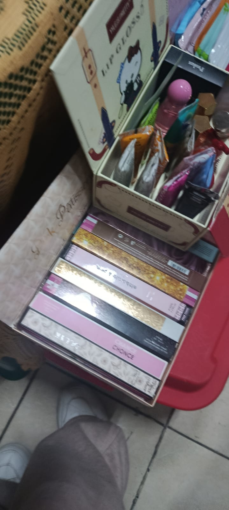
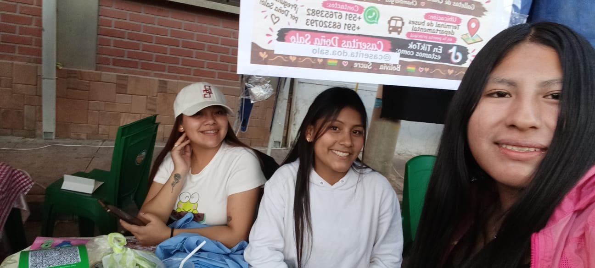
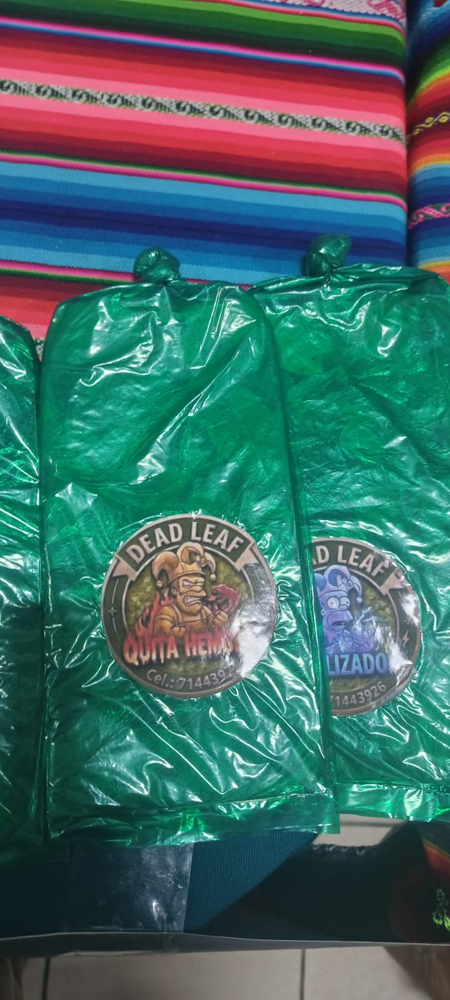
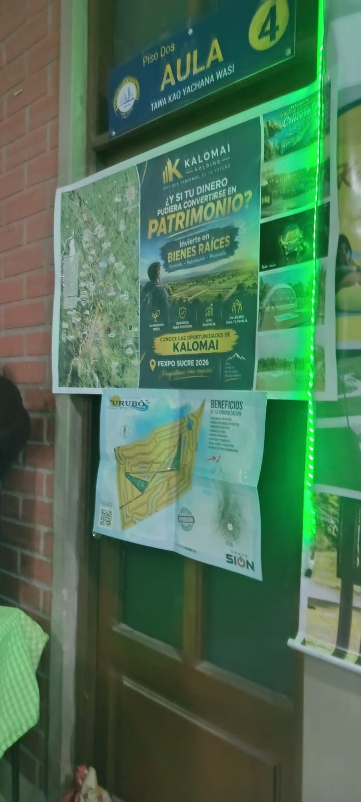
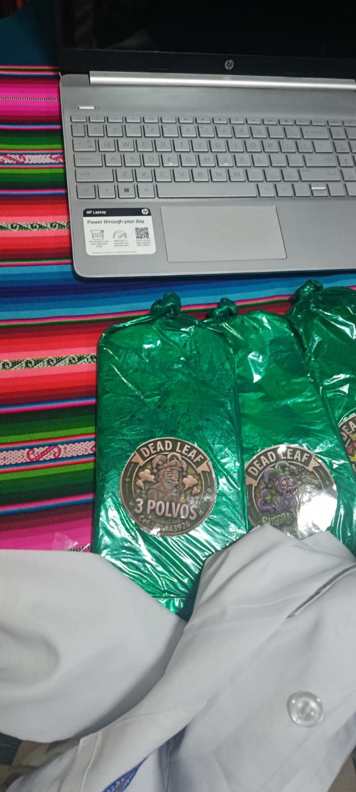

1. ¿Qué se puede encontrar en este rubro?
Respuesta: Materiales e insumos que pueden utilizarse en trabajos manuales y proyectos creativos.
Materiales, herramientas e insumos que pueden apoyar el trabajo manual y la creación de productos.
Ver preguntas y respuestas ↓Materiales, herramientas e insumos que pueden apoyar el trabajo manual y la creación de productos. Las fotografías muestran ejemplos del material recopilado durante el recorrido de la feria.








Estas preguntas resumen información relacionada con el rubro. Cuando no se contaba con respuestas registradas de una entrevista, se redactaron respuestas orientativas para completar el material.
Respuesta: Materiales e insumos que pueden utilizarse en trabajos manuales y proyectos creativos.
Respuesta: Porque permite encontrarlos con facilidad, cuidar el inventario y reducir desperdicios.
Respuesta: La calidad, la cantidad necesaria, el precio y si son adecuados para el proyecto.
Este es el texto utilizado como referencia para diseñar el logotipo de este emprendimiento.
Crea un logotipo colorido y creativo para un emprendimiento de materiales artísticos y productos para manualidades. Incluye pinceles, lápices, pinturas, tijeras y hojas de papel. Utiliza colores vivos y armoniosos que transmitan imaginación, diversión y originalidad. El diseño debe ser atractivo, ordenado y adecuado para una tienda de materiales creativos. Utiliza un fondo transparente.